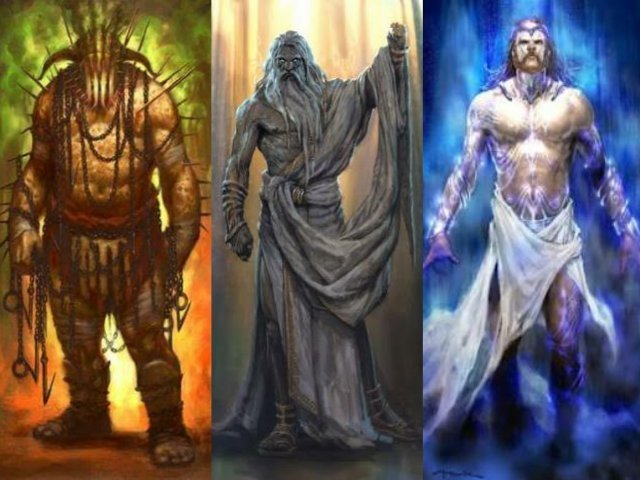

ZEUS HADES Y POSEIDON:
Zeus se quedó con el cielo, Poseidón con los mares y
Hades recibió el inframundo, el reino invisible al que
los muertos van tras dejar el mundo, así como todas las
cosas bajo tierra. Fue así como los tres hermanos se convirtieron
en los dioses supremos de la cultura griega.